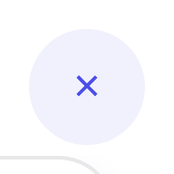
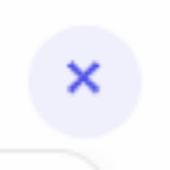
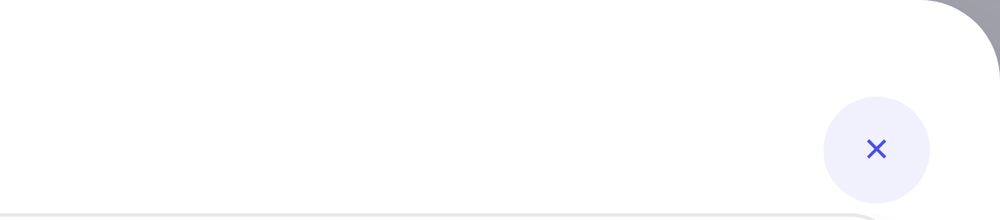
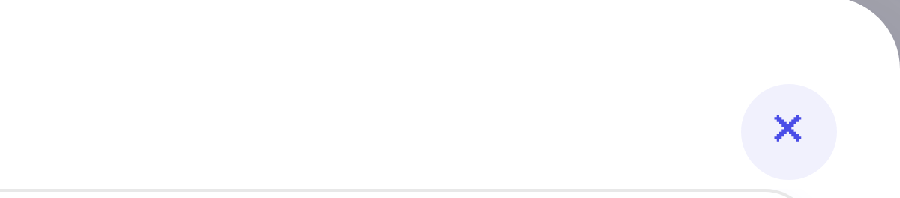
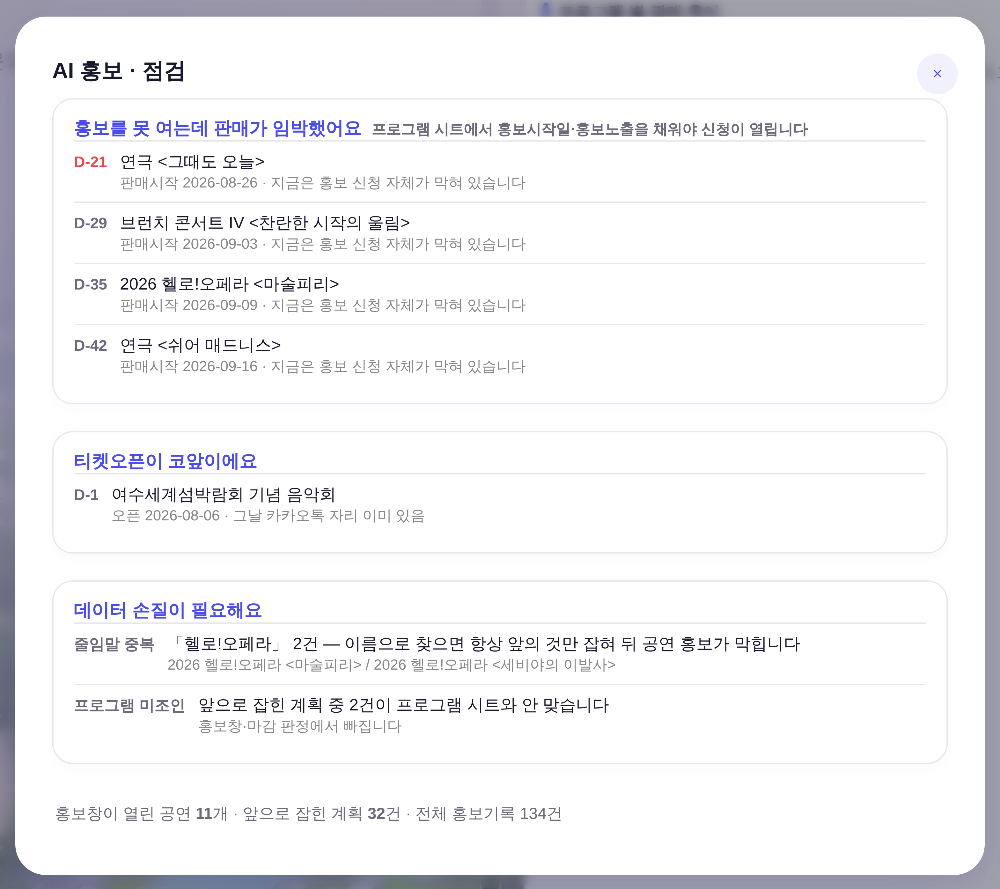
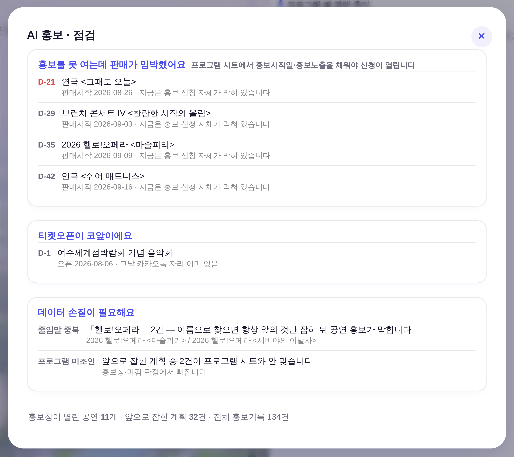

운영자 지적 260805 「x버튼 이런 게 다른 디자인 정본하고 아예 안 맞는다」 · 대상 = 상단 대메뉴 「AI 홍보」 →
openPromoCheck() 모달 · 화면 = ?qa=admin + 운영자 스샷 재현 목데이터 · 실API·실데이터·PII 미접촉 ·
1440×1000 / dsf 4 · 촬영 tools/scratch/shot_modalx_ba.mjs.
이 앱의 모달 닫기 X는 53곳. 그중 52곳이 ✕(U+2715)이고, 이 모달 한 곳만 ×(U+00D7 곱셈기호)였다.
같은 13px·같은 --accent·같은 32px 원인데 글자가 달라서 잉크 폭이 7.59px vs 13px = 41% 얇게 찍혔다 — 눈에는 「X가 힘없이 작다」로 보인다.
× U+00D7 · 잉크 폭 7.59px
✕ U+2715 · 잉크 폭 13px (앱 나머지 52곳과 동일)


| 실측(헤드리스 DOM) | 전 | 후 | 정본 대조군 |
|---|---|---|---|
| 글자 / 코드포인트 | × U+00D7 | ✕ U+2715 | ✕ U+2715 |
| 글자 잉크 폭 | 7.59px | 13px | 13px |
| 글자 잉크 높이 | 15px | 15px | 15px |
| 버튼 원 | 32×32 | 32×32 | 32×32 |
| 모달 우변/상변 거리 | 21 / 29px | 21 / 29px | 21 / 29px |
| 색 / 배경 | rgb(74,77,231) / rgba(74,77,231,.08) | 동일 | 동일 |
aria-label | 없음 | 닫기 | 닫기 |
tools/check_design.py의 검사 ①~⑥은 전부 색·수치가 토큰인가를 묻는다.
「정본 컴포넌트가 정본 부품으로 조립됐나」는 한 번도 안 물었다.
| 기존 검사 | 묻는 것 | 이 사고를 잡나 |
|---|---|---|
| ① raw hex 총량 | 새 색을 들여왔나 | 아니오 |
② :root 블록 수 | 토큰 블록이 늘었나 | 아니오 |
| ③ 새 고아 토큰 | 정의만 하고 안 썼나 | 아니오 |
| ④ 새 이중 정의 | 같은 토큰 두 번 정의했나 | 아니오 |
| ⑤ 대비 WCAG AA | 사람이 읽을 수 있나 | 아니오 |
| ⑥ 잰크 전이 | 프레임마다 리플로 내나 | 아니오 |
| ⑦ 정본 부품 일치 (신설) | 정본 컴포넌트를 정본 부품으로 조립했나 | 예 |
구조적 원인: .modal-x는 CSS(클래스)만 정본이고
내용(글자 ✕)은 53곳에 문자열로 복붙돼 있었다 — 글자에는 SSOT가 없다. 새 모달을 쓰는 사람이 아무 X나 타이핑해도 아무도 안 막는다.
유입 경로(실측): 260805-11 세션이 X 자리를 재려고 만든 실측 하네스
tools/scratch/probe_modalx_canon.mjs L20에서 대조군 버튼을 ×로 다시 타이핑했다.
자리는 그걸로 정확히 쟀고(21/29 맞음), 그 글자가 그대로 실코드로 새어들었다.
= 「정본을 무시」한 게 아니라 정본을 손으로 옮겨 적은 것이 원인이다. 사람 주의력으로는 재발이 안 막힌다.
⑦-ⓐ 닫기 X 글자 = ✕ 하드 0(청산 비용이 0이라 래칫이 아니라 하드) ·
⑦-ⓑ aria-label 누락 = 래칫(기존 22건 동결 · 신규 누락만 차단).
대상은 class="modal-x" 중 닫기만 — 같은 부품을 모양으로 재사용하는 ↓(저장)·↗(새 창)·‹(목록으로)는 제외.
$ python3 tools/check_design.py # 고친 뒤
✓ 디자인 기틀 통과 — … · 모달X 글자 0위반 · X aria누락 22/22
$ # 구 글자(×)를 되돌려 회귀 주입한 상태
$ python3 tools/check_design.py; echo exit=$?
✗ 디자인 기틀 위반 2건 — docs/디자인기틀.md 참조
- 모달 닫기 X 글자가 정본이 아님: L20290 「×」(U+00D7) — 정본은 「✕」(U+2715) 하나뿐이다(앱 전건 일치).
기틀 §2 컴포넌트 7 참조. ⚠ 실측 하네스·시안에서 정본 부품을 손으로 다시 타이핑하지 마라
— 이 위반의 유입 경로가 정확히 그것이었다(`×` 대조군 → 실코드).
- .modal-x aria-label 누락 증가: 22 → 23 (+1). …
exit=1
이 게이트는 3층 방어에 그대로 얹힌다 — 편집 직후(.claude/hooks/design_gate.py) · 커밋(.githooks/pre-commit) 둘 다 같은 검사기를 부른다.
이제 같은 실수를 하면 커밋이 막힌다.
같은 데이터·같은 뷰포트. 우상단 X 말고 달라진 곳은 없다.


X를 보다가 같은 모달에서 함께 눈에 걸린 두 가지. 지시받은 범위 밖이라 손대지 않았다.
① 이 모달 제목 활자 = 17px/800 — 앱 모달 제목 정본은 16px/700
.modal h3{font-size:16px;font-weight:700}(index.html L1118)가 정본이고 실제 h3 사용 37곳 + 인라인 16px/700이 21곳이다.
17px/800은 앱에서 이 제목 하나뿐. 아래는 같은 CSS 값으로 그린 대조(스샷 아님 · 재현 목업).
② .bp-x(닫기 원형 버튼 2곳)는 ×를 쓴다 — 다른 클래스
예약 프로세스(L26005)·에니어그램(L26888)의 .bp-x는 .modal-x와 다른 부품(34px·글래스 톤·--text 잉크)이고,
2곳끼리는 서로 일치한다. 게이트 ⑦은 대상 밖으로 뒀다. 기틀 §2 15종에 없는 부품이라
정본 승격·글자 통합 여부 = 운영자 판단(§6 부채 축). 지금 임의로 합치면 그게 곧 새 규칙 창작이다.
npm run check → check_design ✓ (raw hex 1578/1578 무변 · 신규 색·토큰 0 · 모달X 0위반 · aria 22/22)
check_refs ✓ · build_annual_yr ✓ (누계 1,523,323)
npm run smoke:layout → ✓ (이젤 하단선 계약 ①~④ 무변)
pageerror → 0